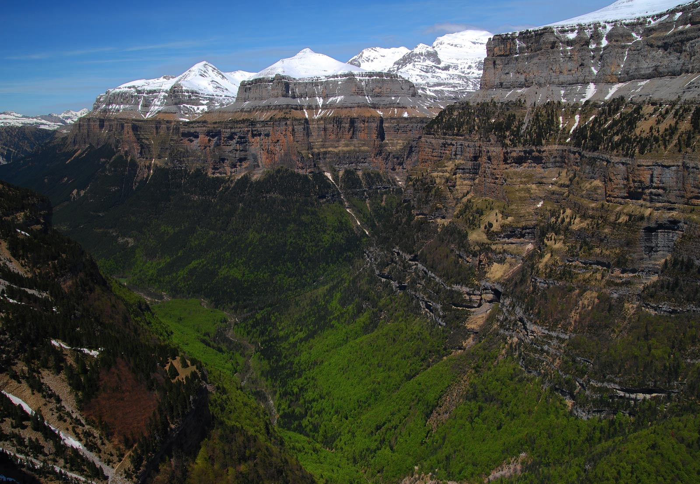
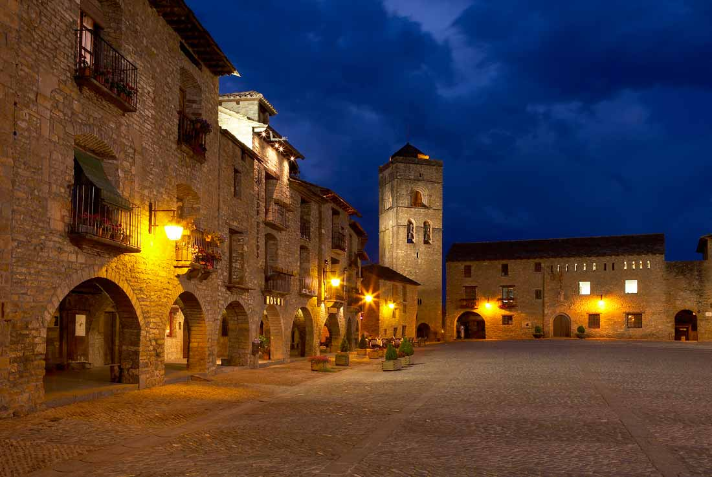

Parque Nacional de Ordesa y Monteperdido
Se crea en el año 1918 para el Valle de Ordesa, y en el año 1982 se realiza una ampliación a los tres valles que, además de Ordesa,
forman el Macizo de Monte Perdido: Valle de Pineta, Gargantas de Escuaín y Valle o Cañón de Añisclo, ocupando en la actualidad una extensión de
15.608 hectáreas. Cada uno de los cuatro valles es diferente y tiene sus propias peculiaridades.
El Parque se encuentra situado en el Pirineo Aragonés, en la provincia de Huesca y a su vez en la comarca de Sobrarbe, es limítrofe por el
norte con el Parc National des Pyrénées en Francia. Su territorio pertenece a los municipios de Torla, Puértolas, Fanlo, Tella-Sin y Bielsa, más el Ayuntamiento de Broto que tiene territorio en la zona de influencia del parque.
El Parque Nacional de Ordesa y Monte Perdido constituye una unidad geográfica de primer orden. Domina su orografía el imponente Monte Perdido, 3.348 m., siendo el mayor macizo montañoso calcáreo de Europa Occidental, con las cimas de los Tres Sorores o
Treserols: Monte Perdido, Cilindro y Pico de Añisclo –Soum de Ramond-, desde donde derivan a modo de brazos los valles de Ordesa, Añisclo, Escuaín y Pineta, cincelados por las aguas respectivas de los ríos Arazas, Bellós, Yaga y Cinca

1-La cola de caballo
La ruta hasta la Cola de Caballo por el camino clásico del valle de Ordesa es una de las excursiones más populares y conocidas de los Pirineos.
Durante el recorrido podremos admirar las espectaculares paredes del valle, excavadas por la erosión de un antiguo glaciar, disfrutar de los
diversos saltos de agua que presenta el río Arazas: la cascada de Arripas, la cascada del Estrecho, las Gradas de Soaso,... y conocer la gran riqueza natural del valle.
2-Cañón de Añisclo
El Cañón de Añisclo, generado por el río Bellós, está orientado de norte a sur y se prolonga a lo largo de casi 25 kilómetros, desde el Circo de Añisclo -a los pies de Monte Perdido- hasta la confluencia con el valle de Aso.
Una vez finalizada la ruta a pie puedes seguir el recorrido del cañón en coche (la carretera es de sentido único durante el verano) partiendo de Escalona hacia Puyarruego y continuar hacia Fanlo, donde podrás reponer fuerzas con un buen bocata de longaniza y una cerveza en la terraza del bar Las Eras, inconfundible con sus sombrillas de colores.
3-Aínsa, cruce de caminos
L'Ainsa se encuentra situada estratégicamente en la confluencia de los ríos Cinca y Ara, sobre un alto a 589 m. de altitud, desde dónde se
domina todo el entorno.

En un lugar privilegiado, entre el Parque Nacional de Ordesa y Monte Perdido, el Parque Natural de los Cañones y la Sierra de Guara y el Parque Natural Posets-Maladeta, Ainsa es la encrucijada más importante de vías de comunicación de este sector pirenaico.
4-Ibón de Plan
El Ibón de Plan también conocido como Basa de la Mora, es considerado como uno de los ibones más bellos del pirineo.
El acceso al ibón puede realizarse a través de diferentes vías bien distintas. A pie desde la cola del embalse de Plan tomando una senda que en fuerte pendiente asciende hasta el ibón salvando un desnivel de 960 metros. Se trata de una ascensión dura y exigente de unas 3 horas de duración.
La segunda opción de alcanzar el ibón, totalmente a pie también, parte desde Saravillo a través del sendero GR-15. Se trata de una opción con mayor distancia y menor pendiente que la anterior si bien salva un desnivel similar.
5-Carnaval de Bielsa
El Carnaval de Bielsa se viene celebrando desde tiempos inmemorables, y sigue conservando la esencia de la fiesta, debido a sus singulares personajes.
Las trangas son mozos solteros que van vestidos con la piel y los cuernos de un macho cabrío, una saya, unas abarcas y grandes esquillas en la cintura. Simbolizan la fertilidad.
Las madamas, son las mozas solteras, que son recogidas por los trangas al hacer la ronda por la puerta de su casa. En sus trajes se combinan las sedas, brocados, rasos y cintas de colores.
6-Territorio nieve
Los enamorados de las disciplinas deportivas de invierno consideran un viaje a estos territorios nevados como una especie de consagración.
La razón está en que, además de los impresionantes descensos que proporcionan los Pirineos, las instalaciones y servicios ofrecidos por las estaciones de montaña son excelentes gracias a la fuerte inversión que se realiza para su mantenimiento y mejora. Son un foco para el turismo durante los meses fríos.